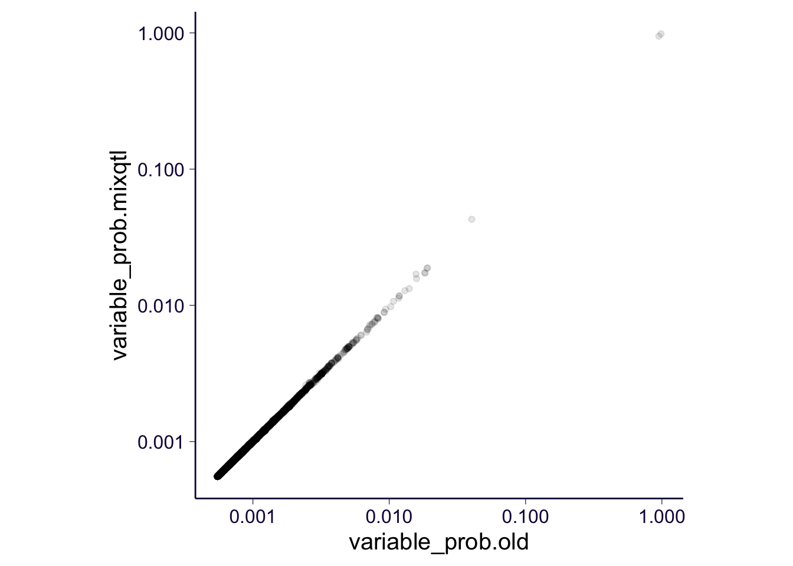

rm(list = ls())
library(dplyr)
library(ggplot2)
library(cowplot)
library(tictoc)
source('https://gist.githubusercontent.com/liangyy/43912b3ecab5d10c89f9d4b2669871c9/raw/8151c6fe70e3d4ee43d9ce340ecc0eb65172e616/my_ggplot_theme.R')
th = theme_bw(base_size = 15) + th devtools::install_github('liangyy/mixqtl', auth_token = '163286e54308901bcc73ac6cce9c03d3a8055e7c')## Skipping install of 'mixqtl' from a github remote, the SHA1 (03ee08e5) has not changed since last install.
## Use `force = TRUE` to force installationlibrary(mixqtl)
dat = readRDS('/Users/yanyul/Desktop/mixqtl-test/mixfine/input--ENSG00000277734.rds')
covariates = read.table('/Users/yanyul/Desktop/mixqtl-test/share_with_francois/covariate-combined.txt', header = T, stringsAsFactors = F)
covariate_names = stringr::str_replace(colnames(covariates), '\\.', '-')
covariates = cbind(covariates[, 1], covariates[, match(colnames(dat$geno1), as.character(covariate_names))])
indiv_offset = regress_against_covariate(dat$trc_g, dat$nlib, covariates)
geno1 = t(dat$geno1)
geno2 = t(dat$geno2)
class(geno1) = 'numeric'
class(geno2) = 'numeric'
df = data.frame(y1 = dat$ase1_g, y2 = dat$ase2_g, ytotal = dat$trc_g, lib_size = dat$nlib)
tic('run mixFine: ')
mod = mixfine(geno1, geno2, df$y1, df$y2, df$ytotal, df$lib_size, cov_offset = indiv_offset, trc_cutoff = 100, asc_cutoff = 50, weight_cap = 10, asc_cap = 1000)
toc()## run mixFine: : 41.825 sec elapsedif('cs' %in% names(mod)) {
cs = mod$cs
vars = mod$vars
vars$variant_id = dat$geno_name[vars$variable]
} else {
vars = summary(mod)$vars
vars$variant_id = dat$geno_name[vars$variable]
cs = summary(mod)$cs
}Previous script: link
df = read.table('/Users/yanyul/Desktop/mixqtl-test/mixfine/result_pip-mixfine.ENSG00000277734.txt.gz', header = T, stringsAsFactors = F)
df2 = inner_join(df %>% select(-variable), vars %>% select(-variable), by = c('variant_id'), suffix = c('.old', '.mixqtl'))
head(df2 %>% select(variant_id, cs.old, cs.mixqtl))## variant_id cs.old cs.mixqtl
## 1 chr14_22551976_T_C_b38 2 2
## 2 chr14_22554951_A_G_b38 1 1
## 3 chr14_22557312_TC_T_b38 1 1
## 4 chr14_22634064_A_G_b38 -1 -1
## 5 chr14_22632331_G_A_b38 -1 -1
## 6 chr14_23176509_G_A_b38 -1 -1df2 %>% ggplot() + geom_point(aes(x = variable_prob.old, y = variable_prob.mixqtl), alpha = .1) + scale_x_log10() + scale_y_log10() + coord_equal() + th
sessionInfo()## R version 3.4.0 (2017-04-21)
## Platform: x86_64-apple-darwin16.5.0 (64-bit)
## Running under: macOS 10.13.6
##
## Matrix products: default
## BLAS: /System/Library/Frameworks/Accelerate.framework/Versions/A/Frameworks/vecLib.framework/Versions/A/libBLAS.dylib
## LAPACK: /System/Library/Frameworks/Accelerate.framework/Versions/A/Frameworks/vecLib.framework/Versions/A/libLAPACK.dylib
##
## locale:
## [1] en_US.UTF-8/en_US.UTF-8/en_US.UTF-8/C/en_US.UTF-8/en_US.UTF-8
##
## attached base packages:
## [1] stats graphics grDevices utils datasets methods base
##
## other attached packages:
## [1] tictoc_1.0 mixqtl_0.1 cowplot_1.0.0.9000
## [4] ggplot2_3.2.1 dplyr_0.8.3
##
## loaded via a namespace (and not attached):
## [1] tidyselect_0.2.5 xfun_0.6 remotes_2.1.0
## [4] purrr_0.3.2 lattice_0.20-35 colorspace_1.4-0
## [7] testthat_2.3.0 htmltools_0.3.6 usethis_1.5.1
## [10] yaml_2.2.0 rlang_0.4.1 pkgbuild_1.0.6
## [13] pillar_1.4.2 glue_1.3.1 withr_2.1.2
## [16] sessioninfo_1.1.1 matrixStats_0.54.0 foreach_1.4.4
## [19] stringr_1.4.0 munsell_0.5.0 gtable_0.3.0
## [22] devtools_2.2.1 evaluate_0.13 codetools_0.2-15
## [25] memoise_1.1.0 labeling_0.3 knitr_1.22
## [28] callr_3.2.0 ps_1.3.0 curl_3.3
## [31] Rcpp_1.0.1 scales_1.0.0 backports_1.1.4
## [34] susieR_0.7.1 desc_1.2.0 pkgload_1.0.2
## [37] fs_1.3.1 tensorA_0.36 digest_0.6.21
## [40] stringi_1.2.4 processx_3.3.0 grid_3.4.0
## [43] rprojroot_1.3-2 cli_1.1.0 tools_3.4.0
## [46] magrittr_1.5 lazyeval_0.2.2 glmnet_2.0-18
## [49] tibble_2.1.3 crayon_1.3.4 pkgconfig_2.0.2
## [52] ellipsis_0.3.0 Matrix_1.2-11 prettyunits_1.0.2
## [55] rmarkdown_1.12 assertthat_0.2.1 rstudioapi_0.10
## [58] iterators_1.0.10 R6_2.4.0 compiler_3.4.0